基于校园一卡通数据的用户画像分析展示
国际关系学院
校园一卡通数据用户画像分析

图书馆数据分析
我们对于图书馆数据的分析，主要通过三个方面进行阐述：
- 我们从分析各类图书的借阅数量入手，接着对研究生和本科生借阅图书的种类分开分析，为图书馆提出采购建议；然后我们分开对研究生和本科生各系的借还书数量进行分析，接着通过Cognos多维探测的方式研究各系别借还书数量与类别数目对比，分析各系同学的学习特点，为各系同学未来的学习提出合理科学的建议；最后根据各系同学借书的类别特点，帮助借书处为书籍放置规划提出建议。
- 接着我们将对借还书月份特点进行分析，向借书处的工作规划提出供参考的建议。
- 最后我们通过对一天内借还书小时分布特点的分析，为师生借还书时间安排提出建议。
各类书的借阅数量
这里列出了学校借阅数量排名前14的书类的借阅数量：
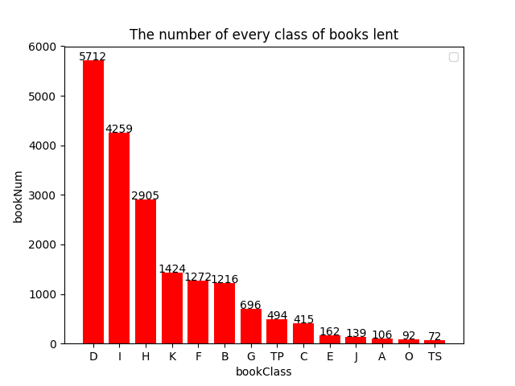
以下是每个字母对应的图书种类：

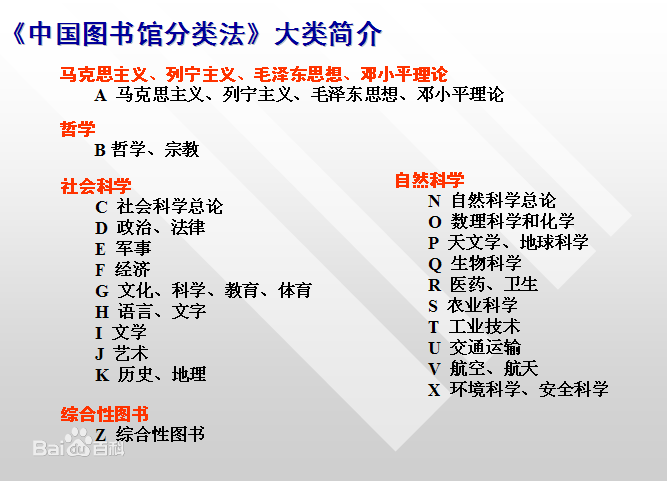
纵观图表数据，我校学生借阅的书籍都集中于社会科学类，其中前三大类最受欢迎的书籍为政治法律类、文学类、语言文字类书籍，且前十大热门书籍门类中只有计算机类不属于社会科学，可以看出我校文科氛围浓厚，同学们对政法、文学文字著作有着较为浓厚的兴趣。
本科生研究生借还书种类对比


对比本科生、研究生借还书情况，发现研究生和本科生在借还书籍上的偏好接近，两个级部最常借还的前十类书籍中有九类是相同的：研究生较本科生偏爱军事类，本科生稍微偏爱轻工业、手工业。另外，本科生最喜欢文学类的图书，其次是政治法律方面，研究生对文学类的书籍兴趣较本科生而言较弱，更青睐政治法律类图书，借阅量远超第二名近三倍数量，超过本科生最高借阅量文学类书籍近一半数量。考虑到研究生人数较少，其借阅书本量仅略低于本科生整体借阅量，说明研究生更喜欢在图书馆借阅书籍、查阅资料。
采购建议
从借还图书总量来看，研究生和本科生相差无几，但研究生人数少于本科生，所以研究生相较本科生去图书馆借书需求量更大，图书馆在购书的过程中，应主要考虑研究生的需求。手工业，军事，艺术类的书籍借还数目较少，说明国关同学对以上方面感兴趣的人较少，其原因是因为国关不涉及相关专业，且该种类图书面向的群体较少，建议图书馆少购买相关种类书籍。
各系借还书数量对比
以下分别是研究生和本科生的各个系的借还图书数目的柱状图：
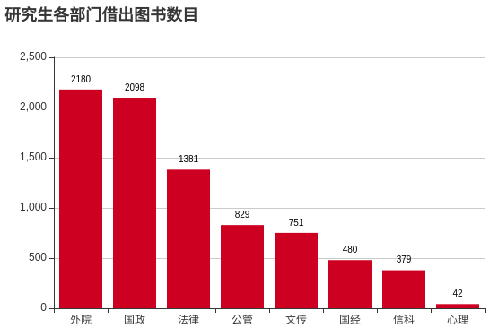
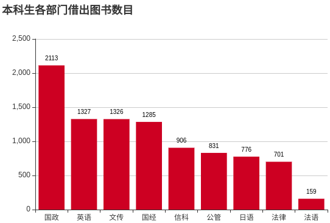

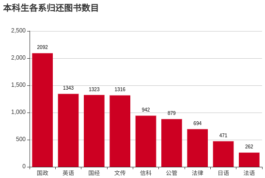
由上图我们可以分析出，研究生中对图书借阅量贡献前两名都为外语学院和国际政治系，且国政系在人数较少的情况下借阅的书籍量几乎与外院持平，可以看出国政系学生最常在图书馆借阅书籍，其次为外语学院，借阅数量最低的院系研究生和本科生分别为信科学院和法律系。
接下来，让我们结合院系与借书种类的特点多维度的分析一下他们之间的关系特点。我们将通过对本科生的分析引入对研究生的分析，将研究生分析结果与本科生的分析结果做对比，为特征明显的系别的同学提出专业学习意见。
各系别借还书数量与类别数目对比
本科生
以下为本科生各系一年内借还书数量与借还书种类数对比图：
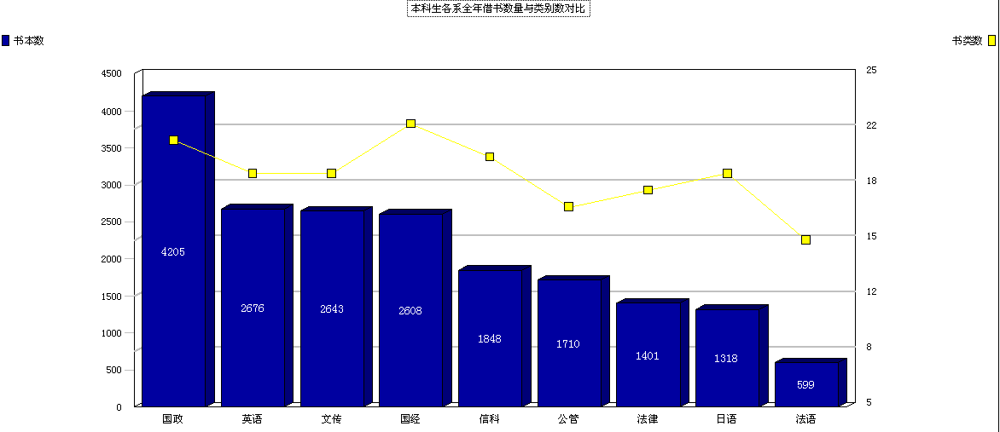
通过分析得知：
国经、国政和信科借还书种类多
- 国政国经一方面可能由于专业对于综合学科的涉及较广，另一方面表明国经国政的同学综合知识水平可能较其他系高；
- 信科的同学则因本身为处在文科院校的理科学生，受文科影响较为大，在查阅理工科类书籍的同时，也依旧会对文科类书籍感兴趣。
公管和法律系可能由于系别要求不同，同学们比较专于本专业的学习，借还书种类偏少，比较专注与专业书籍的研究。
研究生
以下为研究生各系一年内借还书数量与借还书种类数对比图：
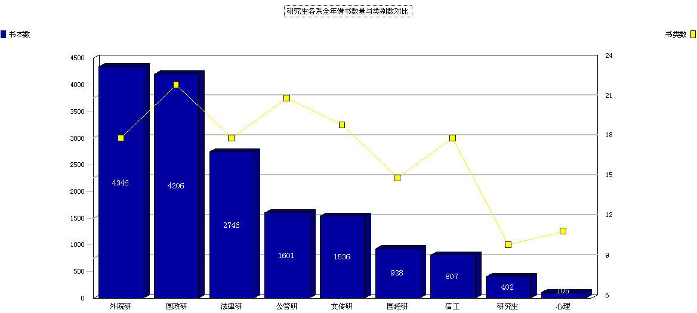
加上研究生各系一年内借还书数量与借还书种类数对比，结合本科生分析情况可知：
- 国政、公管和文传系借书种类数多，尤其是国政借书的数量也尤其多。公管系的研究生明显比本科生借书种类更加繁多，说明公管系对于研究生和本科生要求是有着较大不同的，公管专业的同学如果想要在专业素质上有着更高的提升，建议广泛博览群书，提升综合素养从而有助于知识基础的扎实。
- 法律系的研究生借书数量明显比本科生借书数量更多，而借书种类变化不大，这说明法律系的同学们专业涉及面不是特别广，但是对深度要求较高。建议想要学好法律的同学们能在本科阶段扩宽视野，在研究生阶段更多往学术研究深度靠拢。
- 信科系的学生和文科起学生的要求则大不相同，本科生阶段对于基础知识的要求更高，他们要不断学习新的专业知识来提高专业素养，因此会更多地借阅书籍来提升素养；而在研究生阶段，由于信息产业的发展速度极快，书本内容无法跟上时代的新技术的步伐。由于研究生同学们主要对当代时新技术会做更多的研究，因此会主要借助网络等更新较快的资源来满足学习需求，借阅的书籍就会相对减少，这可以说是一种学习方式的改变。因此建议希望在信科专业取得深入发展的同学们，在本科阶段就对如何高效利用网络资源有着较好的把握，从而有助于自己的进一步发展。
总结与建议
综上所述，国政系的同学们的是借书处的主客，它们不但借阅的图书数量多，而且种类繁杂，涉及面广泛，想必和国政系老师的要求分不开。经了解，国政系同学们研究的课题往往要设计多个学科领域，他们研究的面就更广泛，并且人文学识底蕴会更加深厚。外院的同学们为了学好语言，也会对自己的文学面有着较高的要求，他们会广泛阅读各类图书，不断提升自己的综合素养，造成了事实上学语言的同学们的综合素质也往往比较高。
建议借书处每每在采购图书的时候能够更多的征求国政和外院同学们的建议，他们应该有能力为学校提供有力可靠的建议。
那么接下来，我们将综合各系借还书数量和种类进行各系借还书类关联规则挖掘
关联规则挖掘及综合分析
我们通过利用Weka软件根据图书馆借还书种类及人数数据，对每个人借阅的相关书籍分系别进行了关联规则挖掘，得出了如下结论：
- 国关的学生中信科学院的学生被我校的文科气息感染，借阅计算机类图书时常常借阅文学、政法类书籍
- 国政系、法律系学生钟爱本专业图书，在借阅其他书籍时都会同时借阅政法类书籍
- 外语学院、国际经济系也更喜欢涉及本专业的语言文字、经济类的书籍，除此之外，外院和国经同样有借阅文学类图书的倾向，他们可能比较喜欢通过阅读小说散文等来丰富自己的精神世界
- 文化传播系、公共管理系涉猎广泛，但是都会在借阅其他图书同时借阅本专业书籍
- 此外，国关的研究生偏爱人文社科类的书籍，即使借阅其它专业的书籍也离不开和自己专业有关的其他文科门类，如政法类学生常常借阅地理历史类书籍，借阅哲学书籍的同学倾向于借阅语言文字类书籍，出于国际关系学院专业设置上大部分为文科可以理解。国关的本科生同样偏爱文科书籍，然而和研究生相比，本科生会在文学类书籍上表现出更为浓厚的兴趣，在借阅专业书籍时会顺带借阅一两本小说文学。
给借书处规划书籍位置的建议
- 针对以上数据层面的分析，人文社科类书籍受到国关学生一致青睐，应该将文科类书籍放在相对显眼的区域，鉴于国关同学青睐语言文学类书籍，可以在引进图书时一方面注重学术类专业书籍，另外一方面多多考虑文学类书籍。
- 另外，为了方便同学借阅书籍，优化借书处放置图书结构规划，可以考虑在文科大类下，将语言文学类书放置在政法类和哲学宗教类相邻区域，将历史地理类书籍与政法类书籍放置在相邻区域。
除了以上有关各系借书类别的分析之外，我们还对师生们借书的时间段进行的了细致的分析。
我们将依次根据不同月份和一天中的不同时间段对借还书的频次作分析。
各月借还书人数分析
各月借书人数分析
以下依次是总体、老师、本科生和研究生一年中每个月借书数量条形统计图：
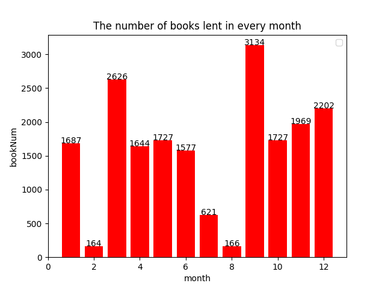
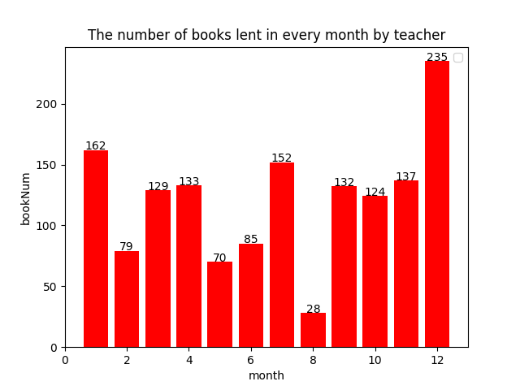
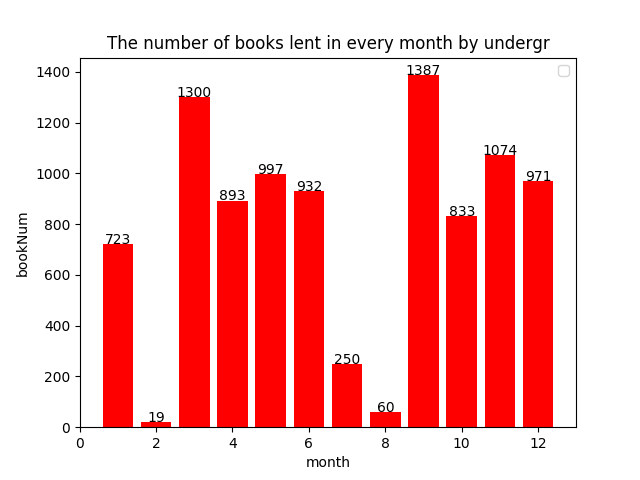

根据一年中各个月份借书情况，教职工借书量呈现波动的分布，在12月时达到借书高峰，总体借书量秋季学期要大于春季学期。学生借书量最大月份的分别为9月和3月，这两个月正好对应每个学期开始的一个月，第二个月借书量随着借书热情消退而走低，在学期第三个月开始产生小范围的反弹或波动，由于学生基数大，对于借书总量的贡献远大于教职工，因此总借书量趋势同本研学生借还数量。
各月还书人数分析
以下是一年中每个月还书数量条形统计图：
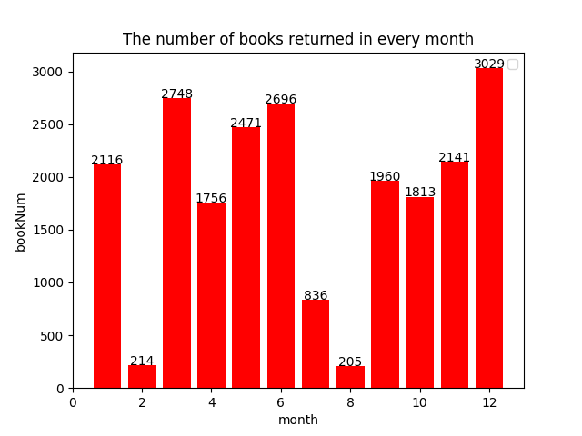
以下依次是老师、本科生和研究生一年中每个月还书数量统计对比图：
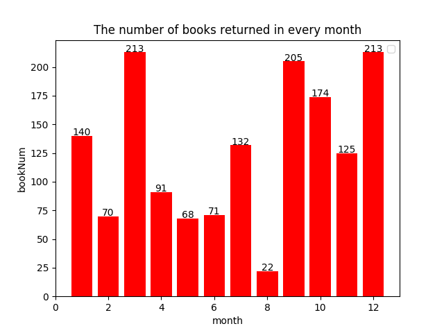

分析各月还书情况知，老师和研究生倾向于在寒假过后的三月还书，经过分析知这些书大多来自12月和1月的借阅，说明他们倾向于把书借回家，利用寒假的时间丰富自己的业余生活。老师在7月还书数量也很高，推测老师习惯在7月把春季学期借阅的图书进行归还，同时可能也会借阅新的书籍供自己在暑假时研读，于是在9月又达到一个还书高峰。同样的，12月也是老师和同学们的借还书高峰。本科生在每个学期里，越靠后的月份还书的数量越多，一般会把本学期所借图书在期末进行累加归还。
建议
总的来说，3、6和12月还书数量较多，同学们更喜欢寒假借阅书籍，而老师们寒假和暑假借书的热情差不多，说明同学们的暑假生活往往比较多姿多彩，不愿局限于书本。而借书高峰主要在3月、9月和12月，其中12月则以老师为主。因此建议学校在临近假期的时候加强借书处的管理，甚至可以按照我们的书籍放置位置建议为老师同学们个性化规划放书位置，以方便师生借阅图书。
一天中各小时借还书人数分析
以下依次是总体、老师、本科生和研究生一天中每小时借书数量条形统计图：


以下是一天中每小时还书数量条形统计图：

以下依次是老师、本科生和研究生一天中每小时借书数量统计对比图：


分析一天中各个时间段借还书情况，本科生与研究生每天归还图书数目最多的时间为上午9点到10点与下午3点，这些时间去图书馆还书的人数最多。主要原因是因为上午没早课或者是提前下课，同学们准备去自习室自习的时候顺便把书归还。本科生和研究生借还书量在下午3点达到一天的高峰，且下午借还书总人数都大于上午。而反观教职工，借还书量在上午10点左右达到高峰，且上午的图书借还书量高于下午，反映在学生和教职工的借还书时间习惯上有所出入。
- 建议老师和同学们错峰借还书，错开9、10点和下午3点，并更多的选择上午借还书，这样能在更宽松的环境下借阅书籍。